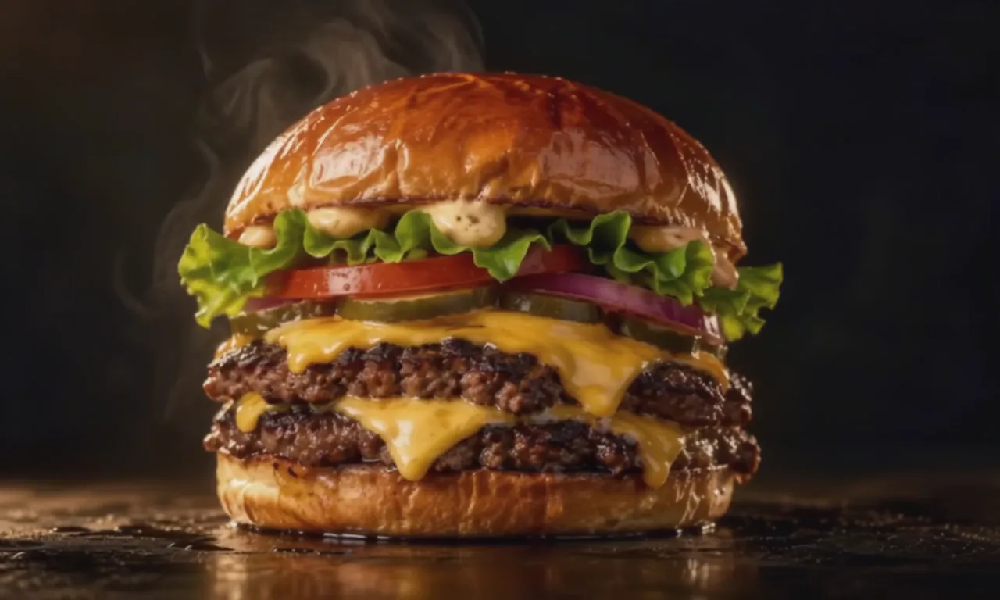

[ next section ]
01 / SMASH
Pressed hard.
Seared fast.
Placeholder copy. Two thin patties hit a ripping hot flat-top and get smashed for a crust.
[ ambient hero sits here ]
scroll down

01 / SMASH
Pressed hard.
Seared fast.
Placeholder copy. Two thin patties hit a ripping hot flat-top and get smashed for a crust.
02 / MELT
Cheese goes
all the way down.
Placeholder copy. American cheese melts into every edge before the bun lands.
03 / STACK
Built to
be eaten now.
Placeholder copy. Pickles, onion, tomato and sauce, then straight to the counter.
[ next section ]